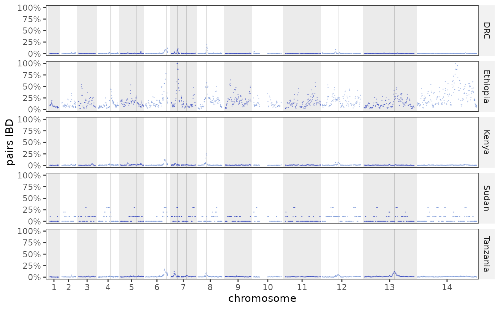

Per-SNP fraction of pairs IBD along the genome. If the table carries a
group column the plot is faceted one row per group.
Usage
plot_ibd_sharing_manhattan(
x,
groups = NULL,
chroms = NULL,
skip_chr = NULL,
zoom = NULL,
zoom_pad = 0.05,
genes_for_track = NULL,
gene_label_angle = 0,
highlight_genes = NULL,
label_genes = NULL,
point_size = 0.5,
point_alpha = 0.6,
colours = NULL,
colors = NULL
)Arguments
- x
An IbdResults object.
- groups
Optional character vector to keep (needs a
groupcolumn).- chroms
Optional chromosomes to keep (any spelling); others are dropped and the remaining ones re-laid-out contiguously.
- skip_chr
Optional chromosomes to drop (complement of
chroms).- zoom
Optional single interval to crop to, keeping the same data and the same coordinates as the genome-wide plot: a chromosome (
"7"), a range ("7:728,081-988,719"), a gene name from the object's track, or a one-row data frame with chr/start/end. Every gene in the window is drawn and named unlesslabel_genes = FALSE.- zoom_pad
Context to add around
zoom, clamped to the chromosome. One value pads both sides (default 5%); two pad the left and the right, either in that order or named –c(left = 5000, right = 40000), and naming only one side pads only that side. Each side is read on its own: below 1 it is a fraction of the interval's span, at or above 1 it is base pairs, soc(0.1, 20000)is legal.- genes_for_track
Optional gene table for the track drawn beneath a zoomed plot (e.g. PF3D7_GENES), so every gene in the window is shown and named while the plot's own short track still supplies the marked positions inside the panel. Without it the track and the marks come from the same genes, which means marking a whole annotation just to see the neighbours.
- gene_label_angle
Rotation for the gene names in that track, in degrees.
0(default) centres each name under its gene;45or90runs it down to the left, which is what keeps long systematic ids from colliding over a dense annotation.- highlight_genes
Optional gene names (from the object's
genestrack) to draw as reference lines; default all genes in the track. Requesting a name not in the track is an error (rather than silently drawing nothing).- label_genes
Label the genes with their names.
NULL(default) labels them only whenhighlight_genesis given;TRUE/FALSEforces it.- point_size, point_alpha
Point aesthetics.
- colours, colors
Optional length-2 colour vector for the alternating chromosome bands.
Examples
plot_ibd_sharing_manhattan(example_ibd_results())
